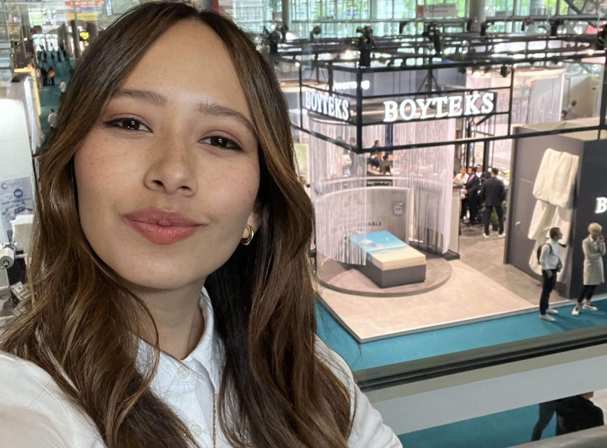

Giovanna Lamadrid
Becoming a Front-end Developer




Hi! I am Gio Lamadrid. I am a Digital Marekting Specialist who has taken interest in coding. My experience in digital marketing can be an asset in a career as a front-end developer, as I have a strong understanding of user experience and how to effectively communicate with clients and stakeholders. I can also use your skills in analytics and data analysis to inform my development work.